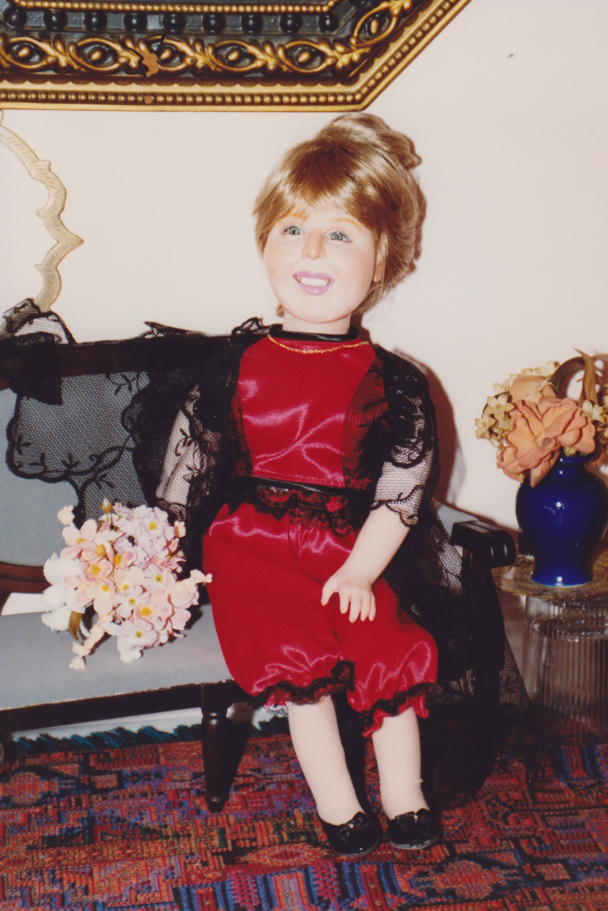
Grammy was always into dolls, but got into making dolls that had porcelain molded faces and soft bodies. Friends and acquaintances in the neighborhood commissioned her to create portraits of themselves or others.
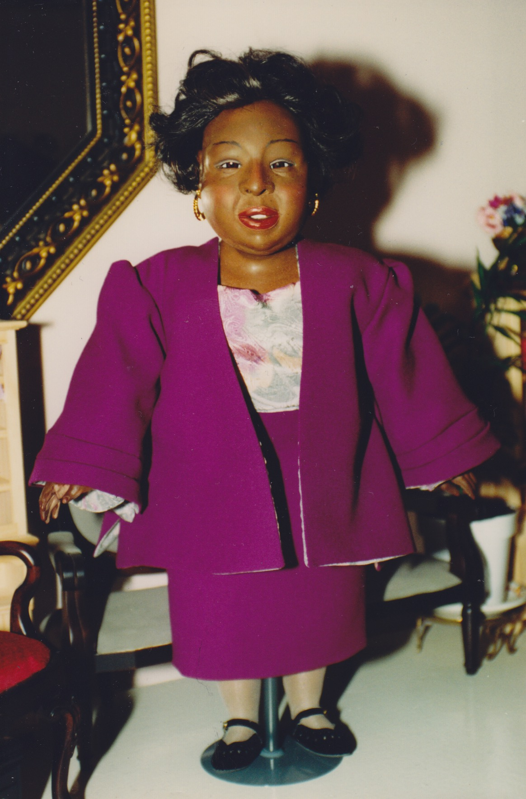
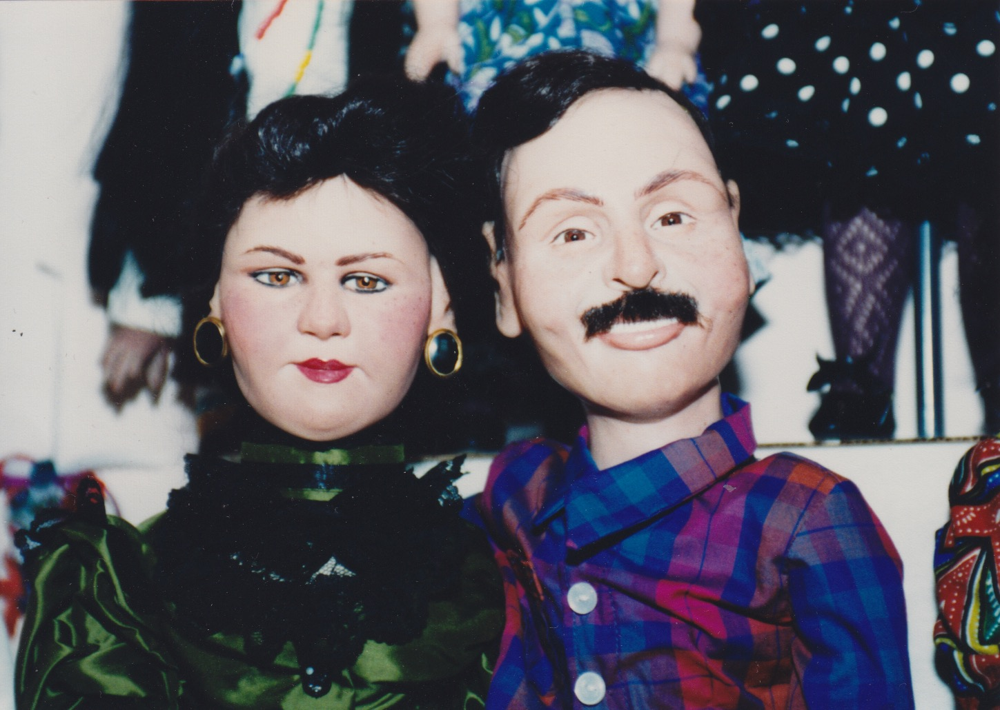
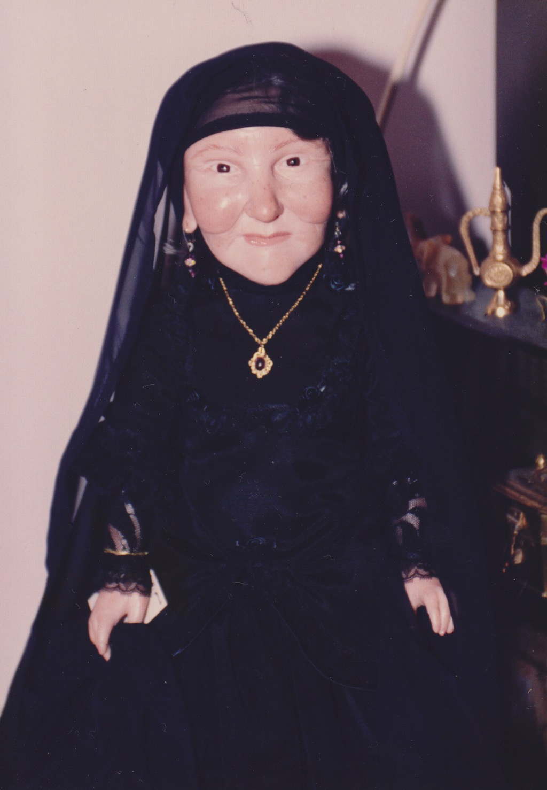
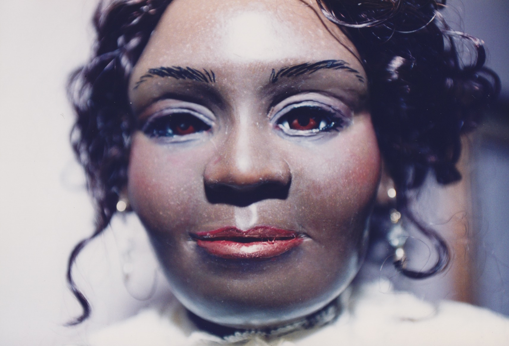
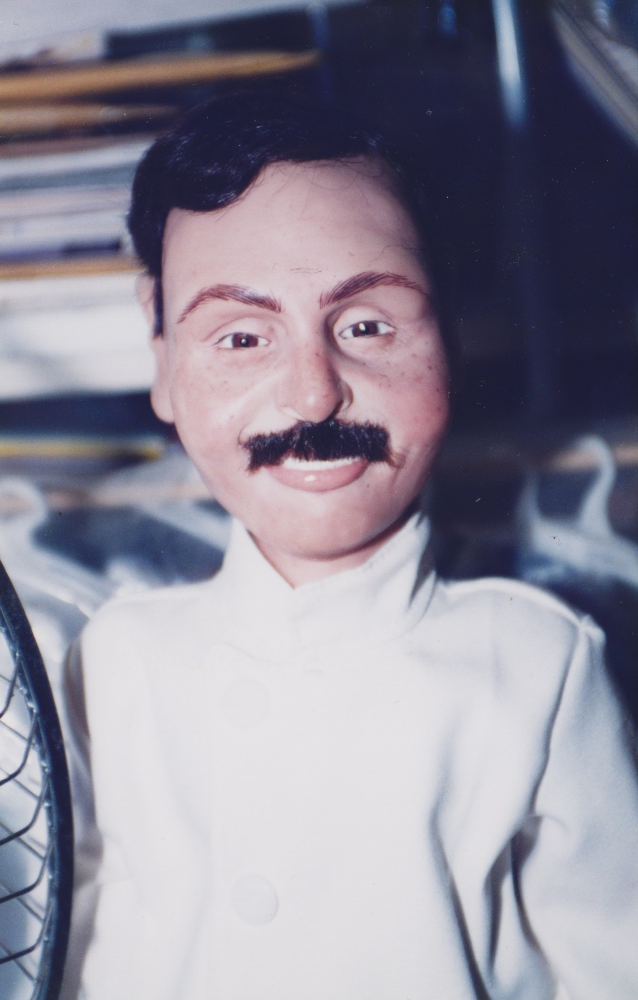
↑ Dolls of her and I together.
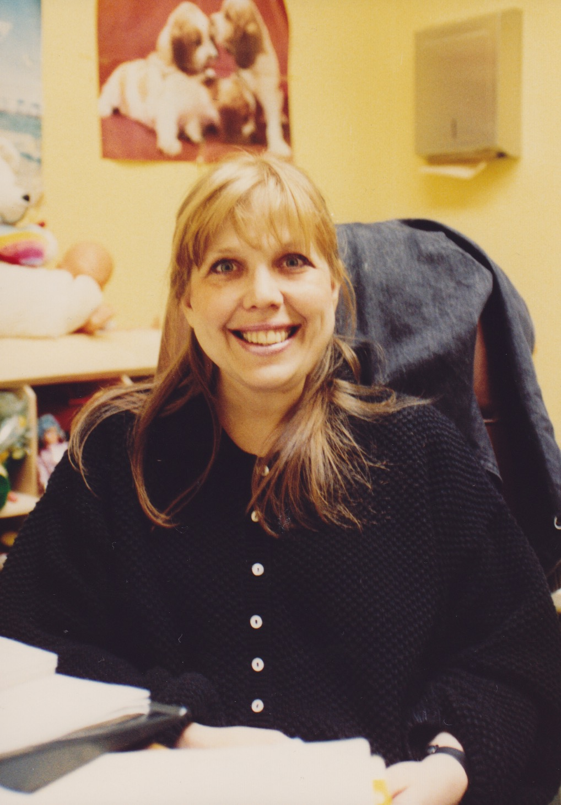
↑ This is likely one of her coworkers from when she was a social worker at Gouverneur Hospital.
↑ Grammy and her husband, Mohammed on their wedding day at the South Street Seaport.
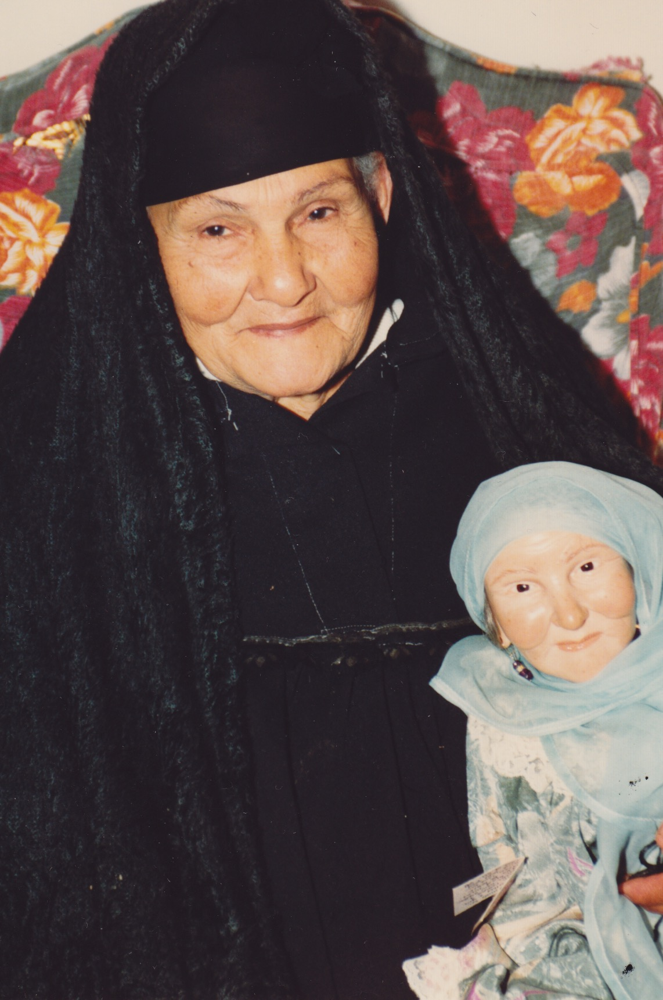
↑ Mohammed’s mother, Aziza, holding a doll replica of herself. A great likeness.
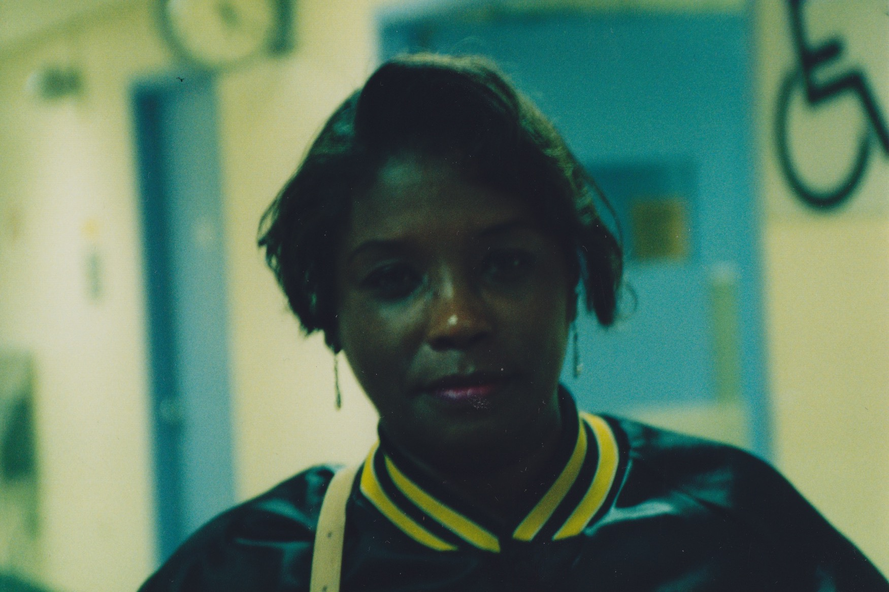
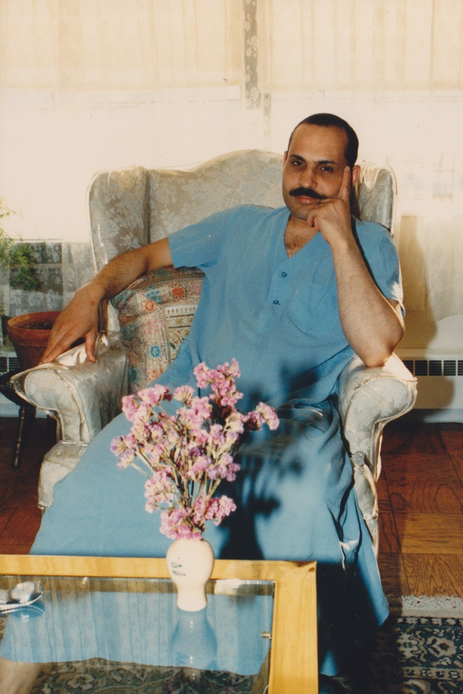
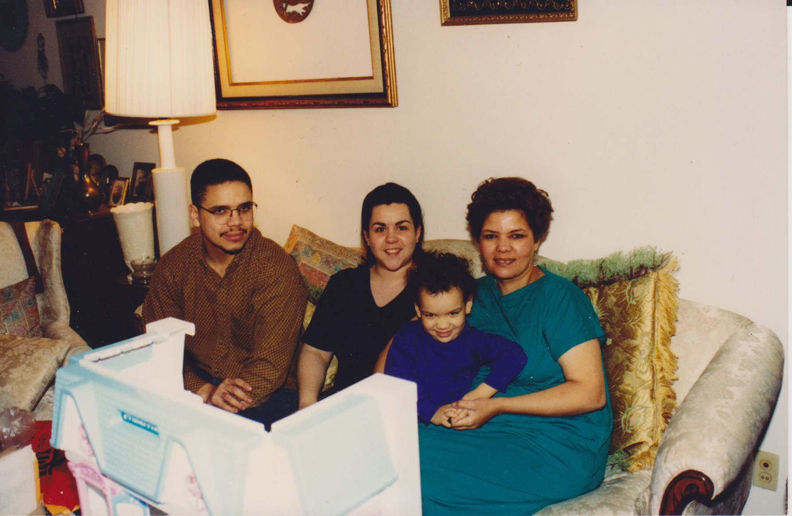
My parents, Grammy and I in 1994.